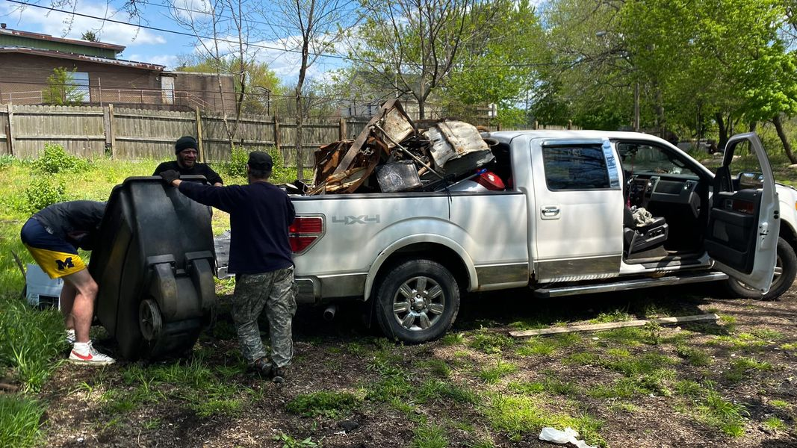

Mobile uploads
I have tried a variety of business ideas with homeless people. The biggest issue I usually run into is theft. If there is a tool or supply that can be walked off with it will.
But scrapping. That is different. They bring their own tools. And the entire point is to collect stuff and get rid of it.
If a person has no transportation or cart of some sort the number 1 thing to scrap is copper. A backpack full of copper is valuable. A backpack full of random metal is not worth the effort. So people usually break into buildings that are abandoned and steal the copper.
But if you have a vehicle everything changes.
Twice a week I lend my truck to a couple trusted people to scrap metal. It’s just junk they find laying around. It’s not stolen out of buildings. It’s usually taken out of dumpsters.
Look at the load of junk they are hauling today. That is probably $40-$60 worth of stuff that would have just been thrown away.
I think my next business investment for homeless people will be a truck.